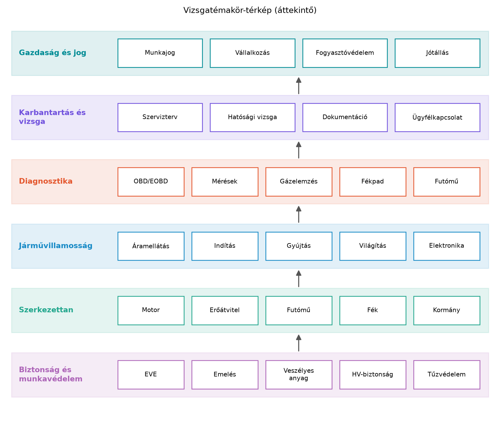

Képzeld el, hogy leülsz az írásbeli vizsgára, megnyitod a feladatsort, és egy olyan számítási példát látsz, amelyben egy 1,8 literes motor nyomatékából kell teljesítményt számolnod. A képletet ismered, de a mértékegységeket elkapkodod: a köbcentimétert nem váltod köbméterre, a fordulatszámot nem váltod szögsebességre, és olyan eredmény jön ki, amelyet fizikai érzékkel azonnal el kellene vetned. A vizsgán nem az a kérdés, hogy hallottál-e a képletről, hanem az, hogy nyomás alatt is következetesen végig tudod-e vinni a számolást. Ez a fejezet arra készít fel, hogy a teljes tananyagot vizsgatémák szerint lásd, és a jellemző írásbeli, illetve szóbeli feladattípusokat begyakorold.
A szakmai vizsga szerkezetét a hatályos vizsgaleírás határozza meg. A korábbi, OKJ 54 525 02 szerinti autószerelő képzést felváltotta a Szakképzés 4.0 szerinti szakmajegyzék, ezért a pontos megnevezést, a vizsgarészeket és a pontozást mindig az aktuális vizsgaleírásban kell ellenőrizni (ellenőrizendő: hatályos szakmajegyzék és vizsgaleírás).
Előírás. A szakmai vizsga jellemzően írásbeli, szóbeli és gyakorlati vizsgarészből áll; az egyes részek időtartamát, a használható segédeszközöket, a pontozást és a vizsgára bocsátás feltételeit a vizsgaleírás tartalmazza (ellenőrizendő: aktuális vizsgaleírás). A vizsgán a gyártói javítási adatokat nem kell fejből tudnod, de a képleteket, a mértékegység-átváltásokat, a szerkezetek működését és a biztonsági szabályokat igen.
A gyakorlati vizsgán a munkavédelmi szabályok megszegése, a biztonsági rendszerek kiiktatása vagy a gyártói előírás figyelmen kívül hagyása nemcsak pontlevonással jár, hanem kizáró ok is lehet. A HV-rendszeren csak arra jogosult, kiképzett személy dolgozhat.
A vizsgára készülés első lépése, hogy a tananyagot ne fejezetszámok, hanem vizsgatémák szerint rendszerezd. Az alábbi rétegábra a szakmai vizsga fő témaköreit mutatja.

A legalsó réteget alkotja a biztonság és munkavédelem: ebből bármelyik szerkezettani vagy villamossági tételnél be kell mutatnod, hogyan kerülöd el a sérülést, a környezetszennyezést és a tűzveszélyt. A középső rétegek a szakmai mag: szerkezettan és villamosság, majd ezekre épül a diagnosztika. A felső réteg a karbantartás, a hatósági vizsga, az ügyfélkapcsolat és a vállalkozási ismeretek. A szóbeli tétel akkor jó, ha ezt a vertikumot használja: a szerkezet mellett elmondja, hogyan ellenőrzöd, hogyan javítod, és milyen jogszabályi vagy biztonsági követelmény vonatkozik rá.
Továbbvitt eredmény. Ez a vizsgatémák szerinti rendszerezés közvetlenül megalapozza a Gyakorlati vizsgafelkészülés: komplex hibakeresési és szerelési feladatok alfejezetet, ahol már nem különálló kérdéseket, hanem összetett tüneteket és munkaszituációkat kell megoldanod.
Az írásbeli vizsgán visszatérő számítási témák az alábbiak. A képleteket a könyv korábbi fejezetei már levezették; itt a cél a gyors, hibátlan felidézés.
| Téma | Kulcsképlet | Tipikus egység | Figyelmeztetés |
|---|---|---|---|
| Motorjellemzők | ; ; | cm³, l, Nm, kW | A furat/löket átszámítása m-re; helyett -t használj. |
| Menetellenállás | ; ; | N, kW | A sebességet m/s-ban kell beírni, a tömegből a súlyerőt (, N) kell képezni. |
| Áttétel | –, 1/min | Több fokozat áttétele összeszorzódik: . | |
| Fékút | ; ; | m, m/s² | A reakcióidő alatt megtett utat külön számold. |
| Ohm törvénye | ; | V, A, Ω, W | Soros/párhuzamos kapcsolásnál az ellenállást előbb rendszerezd. |
| Akkumulátor | ; | Ah, %, A | A kapacitás Ah, a töltés Ah; az áram A, az idő h. |
| Gázelemzés | ; CO, HC, CO₂ | %, ppm, λ | A határértékek jármű- és katalizátorfüggők; a λ=1 nem mindig „jó”. |
Az értékek tanulási példák (ellenőrizendő: hatályos vizsgakövetelmény, gyártói adat).
Példa 1: motorjellemzők írásbeli feladatra.
Adott: négyhengerű, négyütemű Otto-motor; furat
,
löket
,
fordulatszám
,
nyomaték
.
Keresett: egy henger lökettérfogata
,
a teljes lökettérfogat
,
és az effektív teljesítmény
.
Megoldás: először a mértékegységeket váltjuk:
,
.
A szögsebesség:
A teljesítmény:
Ellenőrzés: egy 1,8 literes szívó benzinmotor 4000 1/min-en 180 Nm nyomatékkal 75 kW teljesítményt ad; ez reális nagyságrend.
Példa 2: fékút írásbeli feladatra.
Adott:
,
,
reakcióidő
.
Keresett: a tisztán fékezési út és a teljes megállási
út.
Megoldás: először m/s-ra váltunk:
A lassulás:
A fékezési út:
A reakcióút:
A teljes megállási út:
Ellenőrzés: száraz aszfalton, jó tapadással 90 km/h-ról a 65 m körüli megállási út reális; vizes úton a fékhatás kisebb, ezért az út hosszabb.
A szóbeli tétel a vizsgán nem önálló definíciók felsorolása, hanem egy szerkezet vagy rendszer bemutatása a teljes javítási lánc mentén. Használd mindig a következő receptet.
Recept: szóbeli tétel felépítése.
Ezt a sablont alkalmazd a fékszerkezetre, a motorirányításra, a futóműre és a HV-rendszerre is. A vizsgáztató gyakran úgy tesz fel kiegészítő kérdést, hogy a mérési eljárásból kérdez vissza, ezért a 4–6. lépést ne hagyd ki.
A felkészülés minőségét mérhetővé kell tenni. Írj magadnak ellenőrzőlistát:
30, 15, 31, 50,
D+, B+, 58 kapcsokat, és el tudod
mondani, mi működik, ha a gyújtáskapcsoló zár.Egy vizsgázó a szóbeli tétel során a generátor töltőkörét kapja. A 7 lépéses sablon szerint elmondja a szerkezetet, a működést és a hibákat. A vizsgáztató ezután megkérdezi: „Mit mérnél, ha a töltésjelző lámpa halványan világít?” A jelölt felidézi a feszültségesés-mérést: a multimétert egyenáramra kapcsolja, a pozitív mérőzsinórt a generátor B+ kapcsára, a negatívot az akkumulátor pozitív sarujára köti, majd terhelés alatt méri. Ha a feszültségesés például 0,8 V, akkor a B+ vezeték vagy a csatlakozó hibás. Ez a válasz azért erős, mert nemcsak a hiba nevét mondja, hanem a mérés konkrét módját és a példaértéket is. A vizsgán ez különbözteti meg a magoló jelöltet a gondolkodó szerelőtől.
1. Hiba: a km/h-t elfelejtik m/s-ra váltani a fékút- vagy
menetellenállás-számításnál.
Ha a sebességet 90 km/h értékkel írod be a fékképletbe, a fékezési út
irreálisan nagy lesz, mert a képlet mértékegysége m/s. Helyes
gyakorlat: mindig először váltsd át:
.
2. Hiba: az effektív és az indikált teljesítményt
összekeverik.
A vizsgán az adott nyomatékból általában a effektív teljesítményt kell
számolni, mert a nyomatékot a főtengelyen mérik. Az indikált középnyomás
vagy az indikált teljesítmény a belső folyamatokra vonatkozik.
Helyes gyakorlat: ha a feladat nyomatékot ad, akkor
;
ha indikált adatot ad, akkor a mechanikai hatásfokkal kell
átszámolni.
3. Hiba: a szóbelin csak a szerkezetet mondják el, a hibát és
a mérést kihagyják.
A vizsgáztató értékelni fogja, ha a szerkezet bemutatása után elmondod,
mi romlik el, és hogyan méred. Helyes gyakorlat: minden
tételt a 7 lépéses sablonnal dolgozz fel, és gyakorolj hangosan.
31 kapocs?A válaszok a ### Megoldások elején találhatók.
1. feladat (A)
Egy négyhengerű, négyütemű motor furata
,
lökete
.
Számítsd ki a teljes lökettérfogatot literben.
2. feladat (A)
Egy sebességváltó fogaskerékpárja
,
.
Mekkora az áttétel? Mekkora a kimenő fordulatszám, ha a bemenő
?
3. feladat (B)
Számítsd ki a jármű menetellenállási teljesítményét:
,
,
,
,
,
.
4. feladat (B)
Egy 12 V-os indítóakkumulátor névleges kapacitása 70 Ah.
a) Mennyi töltést tud leadni ideális esetben?
b) Hány óráig üzemeltet egy 4 A-t felvevő fogyasztót?
c) Mekkora a fogyasztó teljesítménye?
5. feladat (C)
A fékpadon az első tengely fékereje
,
a hátsóé
,
a jármű súlya
.
Számítsd ki az üzemi fékhatást, és vesd össze a hatályos határértékkel
(tanulási példa: 50%; ellenőrizendő). Milyen további mérést kell
elvégezni a teljes minősítéshez?
6. feladat (D)
Egy benzinmotor hidegen nehezen indul, melegen jól jár. A műszeres mérés
szerint a hűtőfolyadék-hőmérséklet-jeladó ellenállása 20 °C-os hideg
motornál 0,9 kΩ, a lambda-szonda jele meleg járásnál 0,1–0,9 V között
váltakozik. A gyártói adat szerint a hőmérséklet-jeladó 20 °C-on 2,5 kΩ,
80 °C-on 0,3 kΩ ellenállású. Mi a gyanús alkatrész? Indokold a mérési
adatokkal.
Önellenőrzés – válaszok
31 a testkapocs, azaz a negatív pólus vagy a
járműtest galvanikus kapcsolata.1. feladat megoldása
Átszámítás:
,
.
Egy henger térfogata:
Teljes lökettérfogat:
2. feladat megoldása
Az áttétel:
A kimenő fordulatszám:
3. feladat megoldása
Sebesség m/s-ban:
Gördülési ellenállás:
Légellenállás:
Összes menetellenállás:
Teljesítmény:
4. feladat megoldása
a) A töltés:
5. feladat megoldása
A fékhatás:
A fékhatás a jármű összes fékerejének és súlyának hányadosa (nem egyetlen tengelyé). Ez meghaladja a tanulási példa 50%-os határértékét (ellenőrizendő), tehát a hatásosság teljesül. A teljes minősítéshez azonban ellenőrizni kell a kerékfékerő-eltérést és az erőingadozást is, mert ezek a fékerő nagyságától függetlenül is balesetveszélyt okozhatnak (ellenőrizendő: hatályos vizsgálati határértékek).
6. feladat megoldása
A hűtőfolyadék-hőmérséklet-jeladó gyanús. 20 °C-on a jeladónak 2,5 kΩ-ot
kellene mutatnia; a mért 0,9 kΩ kb. 45–50 °C-nak felel meg
(ellenőrizendő: jelleggörbe). Mivel az NTC-jeladó ellenállása
melegítéskor csökken, az ECU melegnek látja a hideg motort, nem ad
hidegindítási dúsítást – a keverék szegény, a motor nehezen indul. A
lambda-szonda váltakozó jele meleg motornál normális, tehát az
üzemanyag-szabályozás alapvetően működik. A javítás: a
hőmérséklet-jeladó ellenőrzése a gyártói jelleggörbével, majd csere,
hibakód-törlés és hideg próbaindítás.
A szakmai vizsgára készüléskor a tananyagot vizsgatémák szerint kell rendszerezni: biztonság és munkavédelem, szerkezettan, járművillamosság, diagnosztika, karbantartás és hatósági vizsga, gazdaság és jog. Az írásbeli feladatokban a motorjellemzők, menetellenállás, áttétel, fékút, Ohm-törvény, akkumulátor és gázelemzés számításai jellemzőek. Minden számításnál először a mértékegységeket kell rendezni: a km/h-t m/s-ra, a cm-t m-re, a fordulatszámot szögsebességre váltani. A szóbeli tétel erős, ha a szerkezet–működés–hiba–vizsgálat–javítás láncot követi, és a biztonsági, valamint környezetvédelmi szabályokkal zárul. A hatályos vizsgaleírás és a jogszabályok mindig elsőbbséget élveznek. Továbbvitt eredmény. Az itt felépített vizsgatémák rendszere a Gyakorlati vizsgafelkészülés: komplex hibakeresési és szerelési feladatok alfejezetben a gyakorlati vizsgafeladatok megoldásának keretét adja.
Forrástípusok: hatályos szakképzési jogszabályok és vizsgaleírások (IKK), a szakmai vizsga hivatalos útmutatói, a könyv korábbi fejezetei (motorjellemzők, menetdinamika, fék, elektrotechnika, akkumulátor, gázelemzés), valamint a gyártói javítási adatok és diagnosztikai eljárások.
Ellenőrizendő állítások: a szakmai vizsga pontos részei, időtartama, pontozása és a vizsgára bocsátás feltételei; a szakma pontos megnevezése a hatályos szakmajegyzékben; az írásbeli és szóbeli tételek aktuális listája; a gázelemzési és fékhatás-határértékek; a kidolgozott példákban szereplő fékhatás és hőmérséklet-jeladó értékek gyártói adatokként ellenőrizendők.